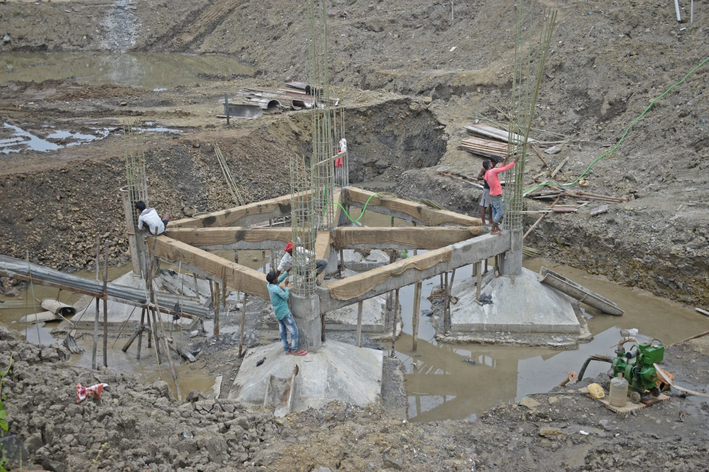

Crews on call now across Plano
Slab Leak Water Damage Restoration in Plano, TX
Your plumber found the slab leak and repaired the pipe, but the water that escaped while it was running has been spreading under your flooring and into wall cavities for days or weeks. The pipe is fixed. The damage isn't. Slab leak water damage requires professional moisture mapping, extraction, structural drying and flooring restoration to prevent mold, wood rot and concrete deterioration. Call (214) 833-4785 for slab leak drying and restoration in Plano.
- ✓ Concrete slab drying
- ✓ Hardwood & tile salvage
- ✓ Works alongside your plumber
☎ Call Now: Slab Leak Drying Crew Contact Us →
After the RepairHow Do I Know If I Have Slab Leak Water Damage in My Plano Home?
A slab leak is a break or pinhole in a water supply line or drain pipe running under your home's concrete slab foundation. In Plano, slab leaks are caused primarily by Blackland Prairie expansive clay soil shifting under foundations and stressing copper supply lines at bends, fittings and slab penetrations. Signs include warm or damp spots on tile floors, damp or discolored baseboards with no visible leak, musty odor near the floor, cupping hardwood flooring, a water bill that doubled without explanation, or the sound of running water when all fixtures are off. Call (214) 833-4785 for a FLIR thermal moisture inspection to locate and map the full extent of slab leak damage.
Why It Happens
Why Slab Leaks Are So Damaging in Plano
Slow, Hidden Spread
Most slab leaks are pinhole failures that release a small but constant flow of water. That water spreads under the flooring across the slab surface, wicking into carpet pad, hardwood, tile thin-set and baseboard for days or weeks before a visible sign appears on the surface. By the time you notice a damp baseboard, the water has often spread 10 to 20 feet from the leak source.
Blackland Prairie Clay Makes It Worse
Plano sits on Blackland Prairie clay, the same expansive soil that caused the leak in the first place. When slab leak water reaches the perimeter of the foundation, it saturates the clay along the foundation edge. Wet clay expands and pushes against the foundation, while the dry clay on the opposite side contracts. This creates differential movement that can crack the slab and stress other plumbing connections, leading to additional leaks.
Mold Behind Baseboards and Under Flooring
The enclosed space between the bottom of baseboard, the top of the slab and the back of drywall is the perfect mold environment: dark, warm, humid, no airflow. Mold can colonize this space within 48 hours and spread behind drywall and under flooring without any visible sign on the surface for weeks. See mold remediation.

Neighborhoods
Plano Neighborhoods Where Slab Leaks Are Most Common
Slab leaks occur across all of Plano, but certain neighborhoods see them more frequently due to soil conditions, home age and plumbing materials:
Willow Bend & Kings Ridge
Custom homes on deep Blackland Prairie clay with post-tension slabs, original copper supply lines under high soil pressure
Preston Meadow & Whiffletree
1980s and 1990s homes where copper supply lines have been through 30+ years of clay expansion/contraction cycles
Haggard Park & Old Town Plano
Older homes with original copper plumbing and some galvanized supply lines approaching failure
Deerfield & Hunters Glen
Two-story homes with slab plumbing that carries higher water pressure to upper floors
Chase Oaks & Russell Creek
Early 2000s construction where copper lines are now 20+ years old in active clay
Restoration Process
Slab Leak Water Damage Restoration Process
01
Thermal Moisture Mapping
Before any demolition, we map the full extent of moisture migration with FLIR thermal imaging cameras and Protimeter moisture meters. Thermal imaging shows temperature differences on the slab surface that indicate where water has traveled, without cutting into anything. This map determines the exact scope of work and prevents under-drying (leaving hidden moisture) or over-demolition (removing dry materials unnecessarily). See moisture mapping inspection.
02
Flooring Removal in Affected Areas
Carpet and pad, hardwood, laminate, LVP or tile in the mapped wet zone are removed to expose the slab surface for drying. We remove only what the moisture map shows is affected, not the entire house. Flooring in dry areas is protected and left in place.
03
Baseboard and Lower Drywall Removal
Baseboards come off in the affected zone so we can check and dry wall cavities. If moisture has wicked up the drywall above the baseboard line (common in leaks running more than a few days), the lower section of drywall is cut and removed to expose the framing and cavity behind it.
04
Slab Surface Extraction and Drying
LGR dehumidifiers and slab-directed air movers are placed to dry the concrete surface. Concrete is porous, it absorbs water through the surface and releases it slowly. Slab drying typically takes 5 to 7 days, longer than walls or framing, and requires daily Protimeter readings to verify progress.
05
Wall Cavity Drying
If moisture entered wall cavities through the slab-to-framing connection, wall-cavity drying systems inject dry air into the cavity to dry framing, insulation and the back of drywall without removing the entire wall.
06
Daily Moisture Monitoring
Every day, a technician takes moisture readings from the slab surface, framing, drywall and subfloor at every documented location. Readings are logged until every material hits its verified dry standard.
07
Flooring and Finish Restoration
Once the slab and structure are verified dry, we install new flooring, baseboards, drywall patches, texture, paint and trim. See water damage reconstruction.
Save Your Floors
Flooring Over Slab Leaks: What Can Be Saved
Hardwood
Cupped hardwood is common after slab leaks. If caught early, our hardwood floor drying system can often save it. See hardwood floor water damage.
Tile
Tile itself survives water well, but the grout and setting bed may hold moisture. We test and dry through the grout lines, and remove tile only when needed for access or replacement.
Carpet
Pad usually needs replacement. Carpet can often be dried and reinstalled after a clean water leak.
Baseboards and Lower Drywall
Swollen MDF baseboards are typically replaced. Drywall bottoms are tested and dried or cut as needed.
Insurance
Does Texas Homeowners Insurance Cover Slab Leak Damage?
Many Texas homeowner policies cover the resulting water damage from a sudden slab leak, and some also cover tear-out and access, meaning the cost to break into the slab or floor to reach the pipe. The pipe repair itself is often treated differently. Coverage varies a lot by policy, so read yours or ask your agent.
We coordinate with your plumber's leak detection findings and document the loss with photos, moisture maps and an itemized estimate for your adjuster.
When You're Not Sure Where the Water Is
If you suspect a slab leak but haven't confirmed it, our thermal moisture inspection can map wet areas across floors and walls before anything is torn out.
FAQ
Slab Leak FAQs
My plumber fixed the slab leak, do I still need water damage restoration? +
Yes. Your plumber repaired the pipe, but the water that escaped while the leak was active spread through the slab, under flooring, into baseboards and potentially into wall cavities. Without professional extraction and structural drying, that moisture will cause mold growth, wood rot, baseboard deterioration and flooring failure. Call (214) 833-4785 for a moisture assessment.
Does insurance cover slab leak water damage in Plano? +
Most homeowner policies cover the resulting water damage from a slab leak, the drying, demolition, flooring replacement and reconstruction. They typically do not cover the plumber's repair of the pipe itself or the access point the plumber cut through the slab. We document the water damage scope in Xactimate for your adjuster at State Farm, Allstate, USAA, Farmers or any carrier. Call (214) 833-4785.
How far does water spread from a slab leak? +
It depends on how long the leak ran. A pinhole leak running for one week can spread water 15 to 20 feet across the slab surface in every direction from the source. A leak running for a month or more can affect the entire slab. Thermal imaging is the only way to know the true extent without removing all the flooring. Call (214) 833-4785 for FLIR thermal imaging.
Can my hardwood floors be saved after a slab leak? +
If the slab leak is caught within the first few days and hardwood floor mat systems are started immediately, there's a good chance of saving the hardwood. If the leak ran for weeks and the hardwood is already cupped, buckled or delaminated, replacement is usually necessary. We assess on-site and give you a straight answer. Call (214) 833-4785.
Slab Leak Damage in Your Plano Home? Call (214) 833-4785
The pipe is fixed, but the water damage isn't. Call (214) 833-4785, 24/7 FLIR thermal moisture mapping, slab extraction, structural drying with daily monitoring, and full flooring restoration. One crew from the first assessment to the last tile laid.
☎ Call (214) 833-4785
Related Services
Related Services in Plano


Slab Leak Damage in Your Plano Home? Call (214) 833-4785
The pipe is fixed, but the water damage isn't. Call (214) 833-4785, 24/7 FLIR thermal moisture mapping, slab extraction, structural drying with daily monitoring, and full flooring restoration. One crew from the first assessment to the last tile laid.
☎ Call (214) 833-4785
Ready when you are
Don't Wait on Water Damage
- ✓ Live answer 24/7, every day of the year
- ✓ Crew dispatched immediately
- ✓ On-site assessment
- ✓ Insurance-ready documentation